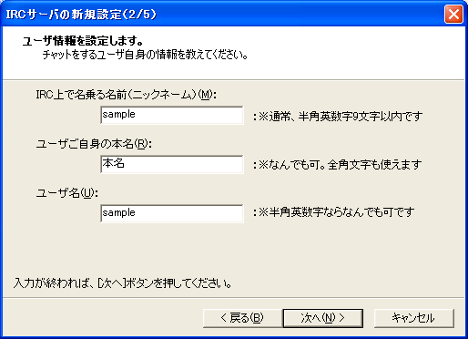
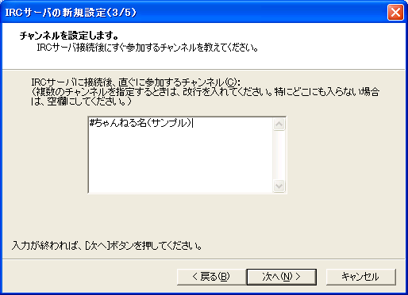
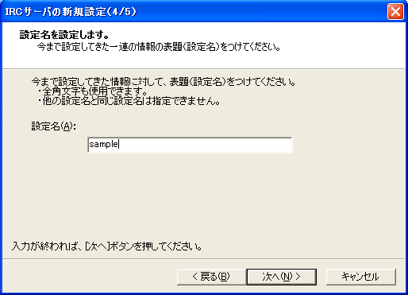
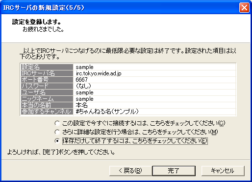

TakIRCを使えるようにしよう
横幅は広く取って見て下さいm(_ _)m
最終更新 2005.09.19
ダウンロード → インストール
まずは TakIRC が配布されているページである TakIRC サポートページへ行って，最新バージョン（2005.09.19現在）である Ver1.20 をダウンロードします．おそらくインストーラ付きのよりも，こっちで解凍する方（tirc120.lzh）が勝手が分かっていいでしょう．
で，ダウンロードしたら，適当なフォルダ（Program Filesとか）に解凍します．これで，インストールは完了です．
Attention!!
解凍するとき，フォルダを作ってその中に解凍をしないと大変なことになります．全部バラけます．
起動
さて，解凍が済んだら早速そのフォルダの中を見てみましょう．なんか色々ありますが，いじるのはコーヒーカップのアイコン（TakIRC.exe）だけです．早速これを実行しましょう．
初期設定

こんな画面が出たと思います．
ここの設定さえ終えてしまえばクライアントソフトは使えるようになりますので，頑張って設定していきましょう．
まず，接続するIRCサーバの入力ですが，右の「IRC網から探す(T)」を押して，下に出てくる選択肢から「IRCnet-jp」を選びます．そうすると入力するフォームの下に候補がずらっと出てきますので，「irc.tokyo.wide.ad.jp」「irc.nara.wide.ad.jp」などから，どれでも好きなのを一つ選んで下さい．
ポート番号は6660から6669ならどれでもいいです．ポートって一体何？という疑問はあるでしょうが，あまり気にせず数字を選んでください．デフォルトの6667でも何も問題はありませんので，いじるのが怖いという人（僕みたいなｗ）は，そのままでいきましょう．
その下のパスワードというのも気にしなくていいです（僕も気にしたこと無い）．
さて，以上が設定出来れば，「次へ」をクリックして，次の項目へ進みましょう．

こういう画面が出たはずです．
ここでは，チャット上で名乗るニックネームを設定します．
半角英数字しか使えないのが難点ですが，まあそこは全世界で使えるチャットだから…ということで(^^;
で，一番上のニックネームがチャット上で表示される名前です．後からでも変えられるので適当に付けましょう．ただし9文字以内です．そして，これは他人と被ってはいけません．被るとそのニックネームは使用不可能です．最後にアンダーバーを付けるなどして対処してください．
で，それを入力すると，一番下も自動で設定されます．
そしてあとは本名を適当に入れましょう（適当ばっかり（笑））．ここは全角でも大丈夫です．
これでここの項目は終わりですので，「次へ」で次へ進みましょう．

次はサーバに接続すると同時に参加するチャンネルの設定です．
普通は /join チャンネル名 というコマンドやクライアントソフト独自のダイアログを使ってチャンネルに参加するのですが，ここで設定しておけばいちいちそれらをしなくてもチャンネルに参加できるようになります．ここでは「#ちゃんねる名（サンプル）」としています．後から追加も出来ますので，やっぱりこれも適当に（笑）．
ちなみに，チャンネル名の前に付いている「#」は絶対に半角ですよ．あとは全角でも何でもOKです．
では，次へ進みます．

もうすぐ終わりです．いままで行った設定に名前を付けます．もうこれも後から追加や削除が自由にできますので，適当にやっちゃってください．

で，確認画面です．
恐らく大丈夫だと思うので，もうすぐにそのチャンネルに入って会話したいという人は，「この設定で今すぐ〜」にチェックを入れて「完了」を押して下さい．まあとりあえずは「保存だけして〜」にしておきます．「完了」を押して，初期設定はめでたく終了です．
実は今紹介した以外にも設定をする方法はあります．Windowsのアプリケーションを使い慣れている方でしたらだいたい直感で出来ると思います．まあ初心者の方も，メニューバーの特に「コマンド(C) > IRCサーバの設定」の項目を色々いじって，自分の手で確かめてみましょう．もし何かおかしくなってしまったら，フォルダごと消してまた新しいのをインストールしてしまえばそれでいいのですから．
接続

さて， IRC で会話するには IRC サーバに接続しなければならないのですが，ここではその方法を紹介します．
マウスを使う簡単なやり方を紹介します．…っていうか，もう図を見てください．これが全てです（笑）．
右クリックして，「つなげて！」を選ぶだけです．
ニックネームが被っていたら直せとの通達もクライアントが丁寧に出してくれます．
（ちなみに「sample」は被っていたので _ （アンダーバー）を二つ付けて対処した）
Unauthorized error が出て接続できなかった人へ
接続するサーバを「irc.media.kyoto-u.ac.jp」に変更して下さい．
それでもダメな場合は，近くのネットワークに詳しい人に問い合わせて下さい．
それ以外のエラーは僕が見たこと無いので，なんとも言えません．あしからず m(_ _)m
会話

接続に成功すれば，あとは設定名のタブ（今回はsample）（何かが繋がってることを示す緑色のアイコンのやつ）を選んで，次にチャンネル名のタブを選ぶだけです．これでようやく会話が出来ます．会話文を入力する場所は図の通りです．

で，コマンド（コマンドについては IRC普及委員会 等を各自参照のこと）を入力したい場合，スラッシュを入力するとそれだけでもう図のようにコマンド入力だと明らかに分かるような状態になります．後はスラッシュ以下のコマンドを間違えずに打ち込んでいきましょう（図では #新しいチャンネル というチャンネルに参加しようとしている）．
おわり
はい，これでもうおしまいです．会話は出来てるでしょ？
もし何か不明な点が残っていたら， IRC普及委員会 や TakIRCサポートページ で調べてみてください．
あとはユーザ個人個人が常識とルールをわきまえることが大切です．
クライアントソフトのより詳しい使い方は，使いながら覚えるといいでしょう．
それでは，どうか楽しいチャットライフを送って下さい．
ではでは．